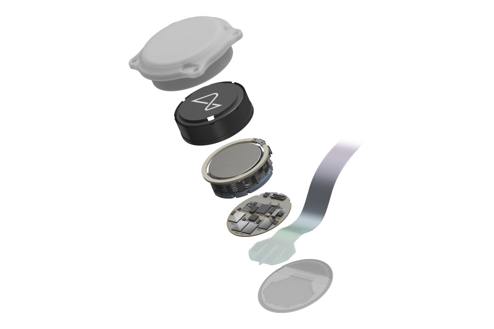

Presentación
Neuralink es un implante cerebral creado para recibir las señales eléctricas emitidas por las nueronas y procesarlas para comunicarse con otros dispositivos como ordenadores o móviles. Este implante esta conformado por un chip diminuto llamdo "N1 link", que se implanta en el cerebro a través de un proceso quirúrjico de mínima invasión, llevado a cabo por un robot.

Con este dispositivo, se busca mejorar la calidad de vida de un amplio abanico de personas en los ámbitos tecnológico y médico. Por ejemplo, está dirigido a personas con discapacidades motoras, como aquellas que sufren de parálisis o lesiones medulares, permitiéndoles controlar prótesis o dispositivos mediante impulsos cerebrales. También se enfoca en pacientes con trastornos neurológicos, como el Parkinson, facilitando el control y la regulación de sus funciones cerebrales afectadas.
He elegido Neuralink por su capacidad de transformar la forma de interactuar con la tecnología y su enorme potencial de futuro. Representa un progreso nunca antes visto en la historia de las interfaces persona-ordenador, que han evolucionado desde dispositivos como los electroencefalogramas para convertirse en una dispositivo de alta precisión. Este dispositivo es capaz de transformar la vida de un amplio abanico de personas con enfermedades neurológicas o parálisis, dandoles la posibilidad de tener una mejor calidad.
Beneficios
Mejora la movilidad en personas con parálisis
La parálisis contituye una gran barrera importante para la independencia y el bienestar de quienes la sufren, por eso Neuralink propone una alternativa innovadora para potenciar la movilidad de personas con parálisis, dandoles la capacidad de controlar dispositivos, protesis o sillas de ruedas, usando pensamientos.
Controlar enfermedades como Parkinson
Neuralink tiene la capacidad de identificar la actividad neuronal irregular y transmitir impulsos correctores que permiten tratar problemas como los temblores, lo que implica no solo mejorar la calidad de vida del usuario, sino que también disminuye la dependencia de otros tratamientos más invasivos.
Comunicación para personas con discapacidad
Neuralink ha dado un gran paso adelante en el area de la comunicación para personas discapacitadas, permitiendoles manifestar de forma directa e independiente las necesidades y pensamientos. Con su habilidad de convertir la actividad cerebral en comunicación oral o escrita, esto facilita la interación con otras personas de forma independiente.
Control del Dolor Crónico
Una de las aplicaciones más prometedoras de Neuralink es la capacidad de controlar el dolor crónico. Al permitir que se apacigüe el dolor de forma directa en las zonas que controlan el dolor. Esto implica devolver a una gran cantidad de usuarios una vida sin un dolor continuo.
Componentes
Recinto Biocompatible
El implante N1 se encuentra sellado en un dispositivo biocompatible capaz de soportar condiciones fisilógicas superiores a las del cuerpo humano.
Batería
El implante N1 se alimenta de forma inalámbrica desde el exterior mediante un cargador compacto e inductivo, facilitando así su uso desde cualquier ubicación.
Chips y electrónica
Los chips y la electrónica de vanguardia, personalizados y de baja potencia procesan las señales neuronales, envianadolas de forma inalámbrica a la aplicación de Neuralink, la cual transforma el flujo de información en acciones.
Hilos
El implante N1 documenta la actividad neuronal mediante 1024 electrodos repartidos en 64 hilos. Además, lleva unas roscas muy flexibles y finas que reduce el daño durante su implantación.
Evolución
Electroencefalograma (EEG)
El electroencefalograma es una herramienta que surge en 1920, que permite medir la actividad eléctrica cerebral de manera no invasiva. Posteriormente, derivó en la creación de los electrodos que se implantaban en el cuero cabelludo para obtener registros. En cambio, Neuralink constituye un avance significativo al estar implantado directamente en el cerebro. Esta cercanía al cerebro permite captar mejor las señales neuronales, algo que en el electroencefalograma resulta imposible
Implantes cocleares
Los implantes cocleares, que surgieron en los años 70, fueron los pioneros facilitando que personas con problemas auditivos pudieran escuchar, mediante electrodos que estimulaban directamente el nervio auditivo pero se crearon con un único propósito. En cambio, Neuralink pretende ser mas versátil, actuando como una interfaz de múltiples funciones tanto cognitivas como motoras, optimizando diversas habilidades cerebrales.
Conexiones sin cables y miniaturización
Las primeras generaciones de dispositivos cerebrales eran de gran tamaño y necesitaban conexiones por cable que dificultaban su uso diario. Además, los usuarios estaban conectados a grandes dispositivos y dependían de un profesional médico para su funcionamiento. Por otro lado, Neuralink se ha centrado en reducir las dimensiones del dispositivo y en su integración sin cables.